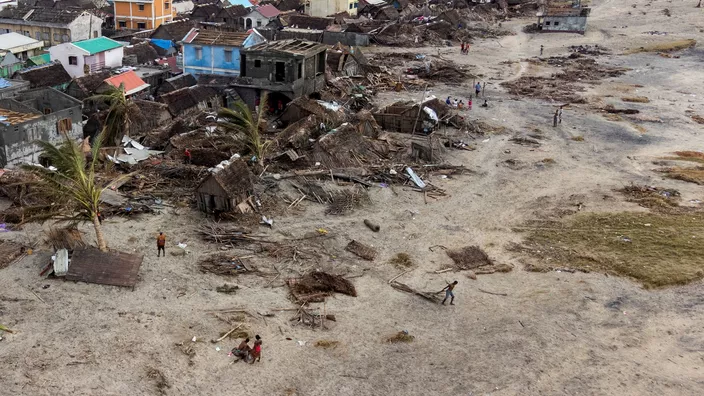

Cyclones de Madagascar : 120 morts et des récoltes compromises

Le bilan des morts à Madagascar, après le passage du cyclone Batsirai, s est alourdi à 120, vendredi 11 au soir, près d une semaine après sa traversée de l île de l océan Indien.
Une grande majorité de ces morts ont été recensés dans le seul district d Ikongo (est), selon le Bureau national de gestion des risques et des catastrophes (BNGRC). Près de 125.000 personnes ont été sinistrées par les pluies diluviennes et les rafales de vent jusqu à 165 km/h qui ont frappé d abord la côté orientale dans la nuit du 5 au 6 février, avant de se déplacer dans les terres, faisant déborder les cours d eau dans les rizières, ce qui a détruit les récoltes.